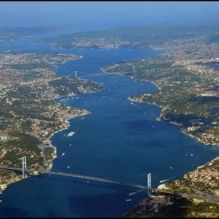
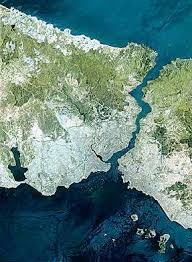

Coğrafyası
İstanbul Boğazı, Karadeniz ile Marmara Denizi'ni bağlayan 29.9 km uzunluğunda bir su yoludur.
Boğaz'ın, uluslararası taşımacılık yapılan sulara oranla çok dar ve bir o kadar da kıvrımlı bir yapısı vardır.
Boğaz'ın iki yakasının birbirine en yaklaştığı nokta Anadoluhisarı ile Rumelihisarı arasında 698 metredir.
En derin yeri Bebek ve Kandilli semtleri arasında 110, ikinci derin yeriyse Arnavutköy ve Vaniköy arasında 106 metredir.
Ortalama su derinliği 60 metredir. Derinlik güneyden kuzeye çıkıldıkça artış gösterir.
İstanbul Boğazı'nın girintili-çıkıntılı yapısı hemen her bölgede kendini gösterir.
12 keskin kıvrımı bulunan Boğaz'ın kıvrılma açıları Kandilli açıklarında 45o, Yeniköy açıklarında ise 80oyi bulur.
Boğaz'ın bu kıvrımlı yapısı nedeniyle suyolu uzunluğu ile kıyı uzunluğu birbiriyle aynı değildir.
Kara uzunluğu Avrupa yakasında bir uçtan bir uca 55 kilometreyi bulurken, Anadolu yakasında bu uzunluk 35 kilometre kadardır.

İstanbul Boğazı Kuş Bakışı
Stratejik Önemi
İstanbul Boğazı,Türkiye dışında Karadeniz'e kıyısı olan Bulgaristan, Gürcistan, Romanya, Rusya ve Ukrayna için Akdeniz'e ve diğer açıkdenizlere ulaşabilmenin tek yoludur.
Baltık Denizi ve Kuzey Okyanusu'na kıyısı olan Rusya dışında diğer ülkeler içinse alternatifi olmayan bir güzergâhtır.
Boğazlar üzerindeki egemenlik Türkiye'nin yanı sıra bu kıyıdaş ülkeler için de önemli bir konudur.
Geçmiş çağlardan beri önemini hep koruyan Boğaz'da ilk egemenliğin Atinalı devlet adamı ve komutan Alkibiades tarafından sağlandığı rivayet edilir.
Alcibiades bugünkü Kız Kulesi'nin üstünde bulunduğu adacığa gümrük binası işlevi gören bir yapı kurarak Boğaz'dan geçen gemilerden vergi almıştır.
Bizans'ın egemenlik kurduğu dönemlerde de Boğaz'dan geçiş için alınan vergiler devlet için önemli bir gelir kapısı olmuştur.
Karadeniz, İstanbul Boğazı ve Marmara Denizi'nin kesişme noktasında bir yarımada üstünde kurulu İstanbul şehri yüzyıllar boyunca en korunaklı, ele geçirilmesi en güç kentlerden olmuştur.

İstanbul Boğazı Uydu Görüntüsü